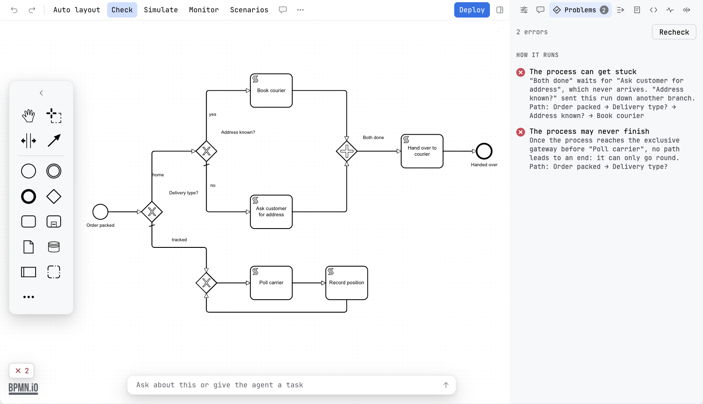
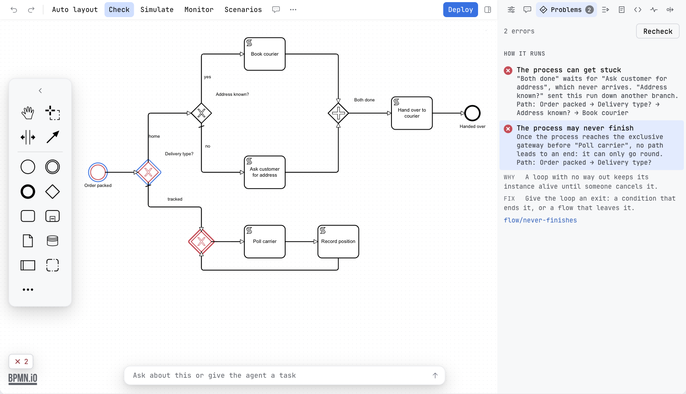

Guide / Check your work
Flow analysis
Flow analysis follows every way a token can take through your process and tells you what will go wrong before you run anything.
What it finds
It starts a token at each start event and follows every path. It reports these problems, each with the reason, and it outlines the path that leads there:
| Problem | What it means | Rule |
|---|---|---|
| The process can get stuck | A gateway waits for something that never comes. Usually a parallel gateway joins branches that an exclusive gateway chose between, or a boundary event took the run somewhere else. | flow/deadlock |
| A part of the process can run twice | Branches that run at the same time meet at an exclusive gateway or a task. Everything after runs once per branch. | flow/no-synchronization |
| An element can never run | Nothing leads to it, or every way to it is closed off. | flow/dead-element |
| The process may never finish | Once it gets to a point, no path leads to an end. It can only go round. | flow/never-finishes |
| Only part of the process was analysed | The process has too many states to check all. What the check says is true of the part it reached. | flow/too-complex |
| A decision has no way out for some values | A gateway with no default flow whose conditions leave a value uncovered. amount > 100 and amount < 100 both miss 100. | flow/no-way-out |
| Two ways out of a decision can both hold | Two conditions of an exclusive gateway overlap. The engine takes whichever it checks first. | flow/overlap |
| A decision may have no way out | A gateway that has conditions but no default flow, and whose conditions could not be read. | flow/no-default |
| Two variables look like one | Names that differ by a letter or its case, such as orderId and orderID. One is probably a typo. | flow/lookalike |
Conditions are read when they are simple: comparisons, and, or and not, in FEEL (Camunda 8) and JUEL (Camunda 7). A condition that cannot be read, with no default flow, is reported as a note.
The same walk finds the scenarios of a diagram: the ways through it. See Scenarios, where Generate turns them into runnable ones.
An example
A diagram starts, reaches an exclusive gateway called Which way, and sends the token either to Task A or to Task B. Both flows meet again at a parallel gateway called Join, and then the process ends.
The exclusive gateway sends the token down one branch only. The parallel gateway waits for a token from each branch. The second one never comes. The check reports The process can get stuck for Join, with the path Start → Which way → Task A, and outlines that path on the canvas. The fix is to join with an exclusive gateway, or to make the split parallel.
How it works
- It works on the diagram only. It does not need an engine, and it does not run anything.
- A process, and each sub-process, transaction and ad hoc sub-process inside it, is a scope. It starts a token at each start event of the scope and explores every way the tokens can move. At an exclusive gateway the token goes down each outgoing flow in turn, at a parallel gateway it splits.
- Each place the walk can be in counts as one state. The walk stops at 20,000 states in a scope and then reports Only part of the process was analysed.
- Conditions on flows are read as FEEL for Camunda 8 and as JUEL for Camunda 7, as far as they are comparisons joined with
and,orandnot. This is what lets it say that two conditions overlap or leave a value out.
What goes in and what comes out
| Where | Input | Output |
|---|---|---|
| The editor | The open diagram | The section How it runs in the check card and the Problems tab |
penstock check --only flow | The diagrams under the paths. Forms alone are not flow-checked. | A table of findings with the rule id, or --format json, sarif or github. Exit code 1 when something is found. |
The MCP tool analyze_flow | The absolute path of one diagram | A JSON list of problems. Each has kind, title, detail, elements (the ids involved) and trace (the ids of the path that leads there) |
Flow analysis is part of Pro, and Team in a pipeline. The same applies to the command and to the MCP tool. Nothing is written to your project.
In the editor
- Press Check.
- Look for the section How it runs.
- Click a finding. The path that leads to the problem is outlined on the diagram, and the line shows it in words: Path: Start → Which way → Task A.
- Read the Why and Fix lines under it.


Without the editor
The flow section also runs when you check a whole project. Its findings carry the same rule ids.
Run only the flow check
JetBrains
Right-click a file or folder in the Penstock tool window and choose Run Penstock | Check. The flow section is part of the report. In the editor, the section How it runs of the check card shows it.
VS Code
In the editor, the section How it runs of the check card shows it. Flow analysis needs Pro. There is no whole-project action in VS Code. Run penstock check . on the command line, and the flow section is part of the report.
Command line
$ penstock check . --only flow
fail stuck.bpmn
DEADLOCK: "Join" waits for "Task B", which never arrives. "Which way" sent this run down another branch. Path: Start → Which way → Task ARun penstock check . without --only to get all sections at once. The JSON, SARIF and GitHub output carry the same rule ids.
Decision tables and forms
The same idea covers the other two file types. In the DMN editor, Check runs the decision table check, which is Pro: rules that match the same input, and inputs no rule matches. In the form editor it runs the form check, which is lint and therefore free: two fields writing one variable, a field that writes no variable, an option list that repeats a value and an input with no label. See The DMN editor and The form editor.
What you see without Pro
The card shows one line that says how many flow problems were found and that flow analysis is part of Pro. Pressing it explains what Pro gives and how to buy or sign in. In a pipeline the command says the same and that a pipeline needs Team. See Plans and licence.
Common problems
- It reports a deadlock but my process works.
- It follows every path that the diagram allows, not the paths your data takes. If your data never takes the path, the diagram still allows it. Either make the diagram say what you mean, or accept the finding.
- "Only part of the process was analysed."
- The process is too big to check whole. Split it into sub-processes or call activities.
- A condition is not understood.
- Only simple comparisons are read. Add a default flow so the decision has a way out either way.